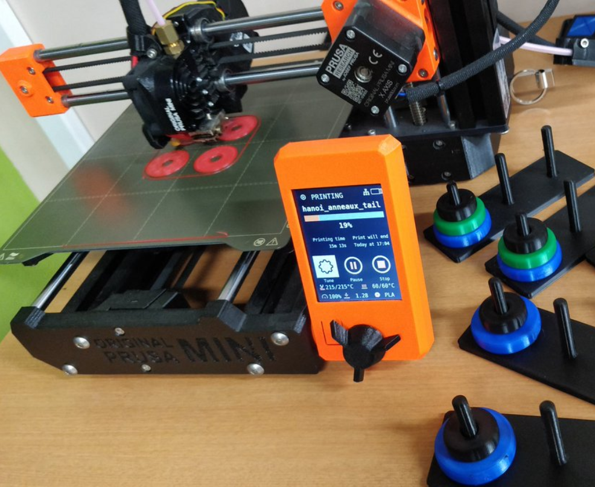
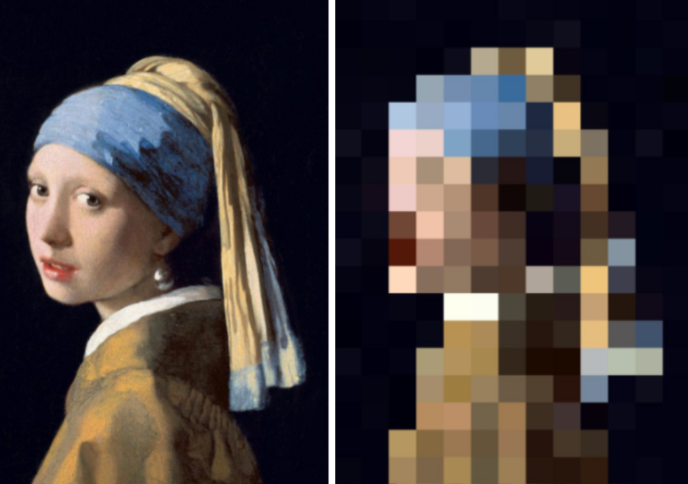
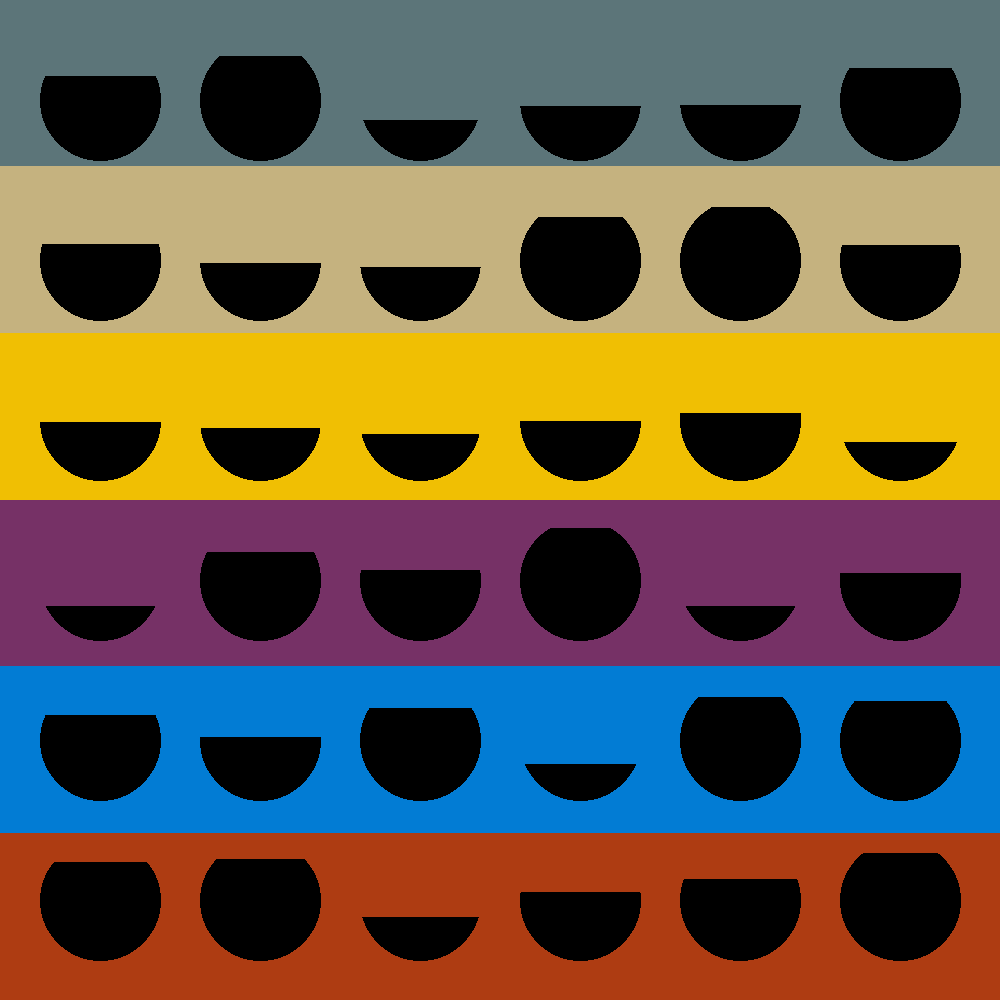
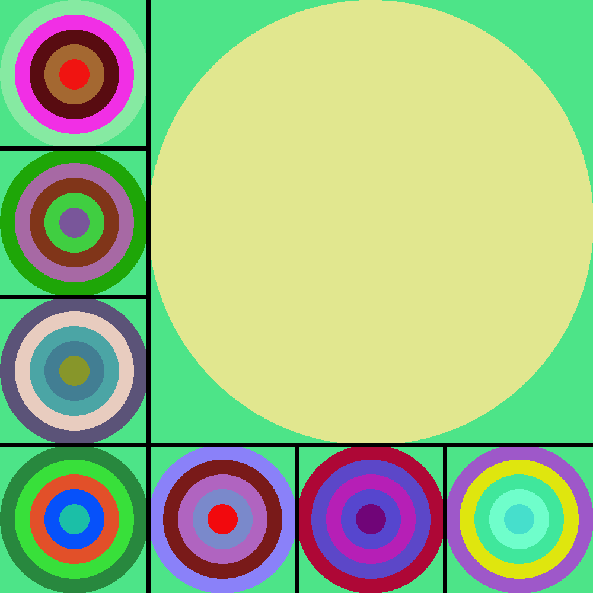
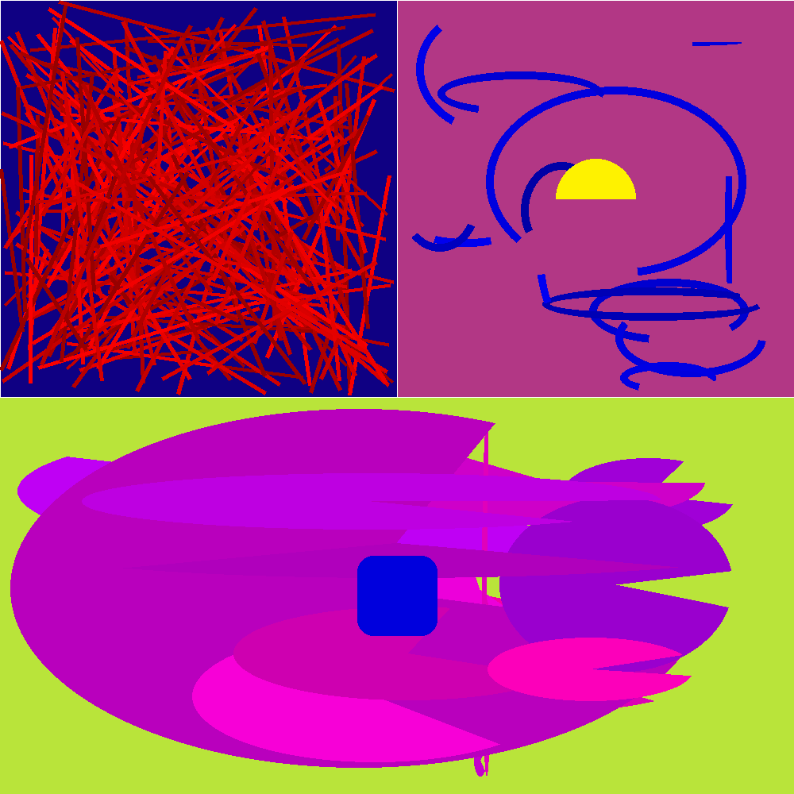
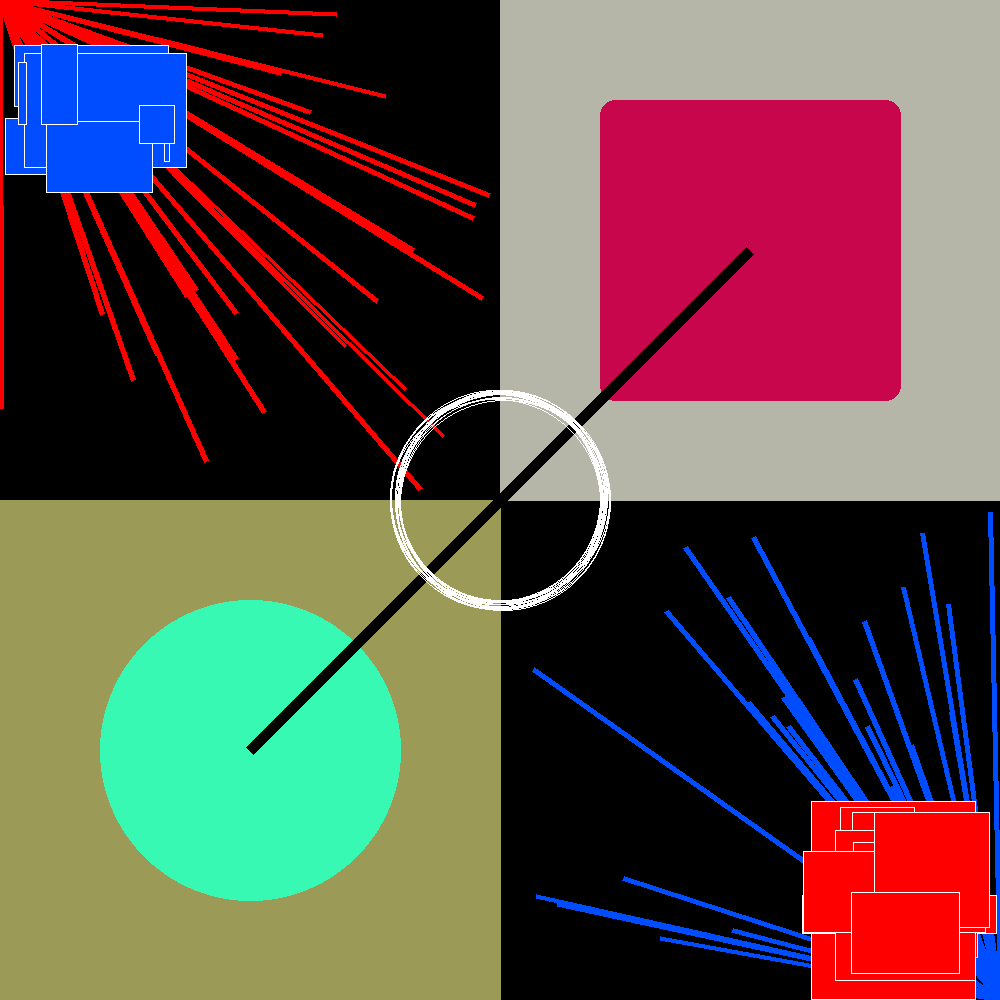

# NSI <div style="text-align:center;color:#e74c3c">NUMÉRIQUE et SCIENCES INFORMATIQUES</div> <br /> <br /> ⚡ Pas de prérequis en maths ou en programmation <br /> ⚡ SNT ≠ NSI <br /> ⚡ Pas de cours magistraux 🠊 projets et activités <br /> ⚡ Préparation aux études supérieures
## THÈMES <br /> * Représentation des données * Traitement de données * Langages et programmation * Algorithmique * Interactions entre l'homme et la machine * Architectures matérielles * Systèmes d'exploitation
## THÈMES & PROJETS <br /> * Représentation des données * Traitement de données <br /> <table> <tr> <td style="vertical-align:top"> <video width="420" src="media/main.mp4" loop></video> </td> <td style="vertical-align:top;padding-top:0px;"> </td> </tr> </table>
## THÈMES & PROJETS <br /> * Langages et programmation * Algorithmique <table> <tr> <td style="vertical-align:top"> <video height="300" src="media/arleatoire.mp4" loop></video> </td> <td style="vertical-align:top;padding-top:38px;"> <video width="280" src="media/pyxel.mp4" loop></video> </td> <td style="vertical-align:top;padding-top:20px;"> <video width="330" src="media/labyrinthe.mp4" loop></video> </td> </tr> </table>
## THÈMES & PROJETS <br /> * Interactions entre l'homme et la machine * Architectures / Systèmes d'exploitation <br /> <table> <tr> <td style="vertical-align:top">  </td> <td style="vertical-align:top">  </td> <td style="vertical-align:top"> <video width="1200" src="media/bit_alterne.mp4" loop></video> </td> </tr> </table>
## THÈMES & PROJETS <br /> <table> <tr> <td style="border-bottom:0px">  </td> <td style="border-bottom:0px">  </td> </tr> <tr> <td style="border-bottom:0px">  </td> <td style="border-bottom:0px">  </td> </tr> </table>
## EN DEHORS DE LA CLASSE <br /> * 🗺️ Sorties cartographie & "open data" * 😺 🐍 Nuit du c0de * 🔬 Visites de laboratoires / fablab * 🤖 Ateliers robotique * 🎙️ Conférences
## ÉTUDES SUPÉRIEURES <br /> * MP2I: Louis-le-Grand, du Parc, Poincaré... * INSA: Lyon, Toulouse, Rennes * EPITA, EPITECH * UNIVERSITÉS: UTBM, UTC, Orsay, Waseda, Toyo... * ...
## 🤟 MERCI! <div style="text-align:center"><video width="600" src="media/osmnx.mp4" loop></video></div>